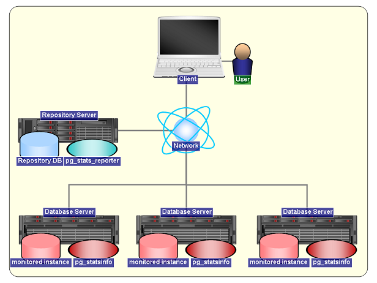

@図2: 動作概要イメージ
pg_statsinfo -- monitor statistics and activities of PostgreSQL server. It is easy to use pg_statsinfo that pg_statsinfo is working with PostgreSQL start or stop.
pg_statsinfo monitors an instance of PostgreSQL server and gather the statistics and activities of the server as snapshots. The snapshots will be stored in the same or another repository database. It also parses PostgreSQL's CSV server log filesm and extracts performance logs from them. Error messages are routed into textlog and syslog according to the message levels.
pg_statsinfo can be easily installed and maintained because it starts or stops automatically when PostgreSQL server starts or stops. Also etting parameters are integrated with setting files of the server. Statistics counters from pg_statsinfo can be displayed with pg_stats_reporter as graphical reports.
@pg_statsinfo のシステム構成例と動作概要のイメージ図を以下に示します。

@図1: システム構成例
@図2: 動作概要イメージ
pg_statsinfo gathers statistics periodically and stores them as snapshots into a repository database. The repository can be in the same database with the monitored instance or in another instance. Also, one repository can store snapshots from multiple monitored instances.
Snapshot holds the following statistics information:
Size of a snapshot depends on the numbers of objects in DB. There are about 600 - 800kB per snapshot. In case of pg_statsinfo default settings, snapshots for each monitored DB requires 90 - 120MB per day.
Note that pg_statsinfo doesn't delete old snapshots. Please delete them manually.
If database statistics is over threshold which was set by user, pg_statsinfo detect and write alert log in postgresql-log(message level is 'ALERT').
Alert function can set following alert parameter:
@(注1) テーブルの断片化率は、クラスタ化テーブル(クラスタインデックスが存在するテーブル)を対象に判定が行われます。
How to set alert function, Please read following passage.
@コマンドライン機能はレポート生成および運用管理を行うためのコマンドを提供します。
※コマンドライン機能の使用方法はこちらをご覧ください。
@リポジトリDBに保存されたスナップショットから任意の期間のレポートをテキスト形式で出力するコマンドを提供します。
また、レポートの出力以外に以下の操作を行うことができます。
@簡易レポート機能が出力するレポートの項目については「pg_statsinfo v2.5 レポート項目一覧」をご覧ください。
なお、簡易レポート機能が出力するレポートの項目は pg_stats_reporter と同等です。
グラフを用いたグラフィカルなレポートを出力したい場合は pg_stats_reporter を使用してください。
@pg_statsinfo の運用管理向けの操作を行うコマンドを提供します。
運用管理機能で行うことができる操作は以下のとおりです。
@1日1回、任意の時刻に下記のメンテナンス操作を行うことができます。
@本機能はデフォルトは ON であり、上記の操作を自動メンテナンス実行時刻に実行します。
@(注1) スナップショットの自動削除が停止している場合、古いスナップショットは自動的に削除されません。必要に応じてユーザ操作で定期的に削除してください。
@(注2) ログファイルの自動整理が停止している場合、古いログファイルは自動的には削除されません。必要に応じてユーザ操作で定期的に削除してください。
@自動メンテナンス機能の使用方法はこちらをご覧ください。
$ su # rpm -ivh pg_statsinfo-2.5.0-1/pg92.rhel6.x86_64.rpm
You can use pgxs to bulld the module from the source codes. You don't have to run sql files manually because pg_statsinfo installs them automatically for both monitored instances and repositories.
$ cd pg_statsinfo $ tar xzvf pg_statsinfo-2.5.0.tar.gz $ cd pg_statsinfo-2.5.0 $ make USE_PGXS=1 $ su # make USE_PGXS=1 install
Note: RPMs of PostgreSQL 9.0, 9.1, 9.2 change the install directory path. Therefore, the RPM of pg_statsinfo also changes install paths. For example, executable files are installed to "/usr/bin" previously. But from PostgreSQL9.0, these files are installed to "/usr/pgsql-9.0/bin".
#minimam configuration shared_preload_libraries = 'pg_statsinfo' # preload pg_statsinfo libraries log_filename = 'postgresql-%Y-%m-%d_%H%M%S.log' # pg_statsinfo need this log_filename setting
#recommended configuration
shared_preload_libraries = 'pg_statsinfo' # preload pg_statsinfo libraries
custom_variable_classes = 'pg_statsinfo'
pg_statsinfo.snapshot_interval = 30min # set snapshot interval
pg_statsinfo.enable_maintenance = 'on' # enable maintenance mode('on' or 'off')
pg_statsinfo.maintenance_time = '00:02:00' # Delete old snapshots every day in this time.
pg_statsinfo.repository_keepday = 7 # keep old snapshots in this period in maintenance.
log_filename = 'postgresql-%Y-%m-%d_%H%M%S.log' # pg_statsinfo need this log_filename setting
log_min_messages = 'log'
pg_statsinfo.syslog_min_messages = 'error'
pg_statsinfo.textlog_line_prefix = '%t %p %c-%l %x %q(%u, %d, %r, %a) ' # This format is same as syslog's format.
pg_statsinfo.syslog_line_prefix = '%t %p %c-%l %x %q(%u, %d, %r, %a) ' # This format is same as syslog's format.
track_functions = 'all'
log_checkpoints = on
log_autovacuum_min_duration = 0
#pg_statsinfo.long_lock_threashold = 30s #threthold parameter for getting LOCK infomation
Attention!
Allow the user who run the PostgreSQL server to login the server without any passwords from localhost. The recommended method is "ident" authentication here. Add the following line to pg_hba.conf when you use "OS-user = DB-superuser = postgres", that is the most common case. Note that you will need to add it in pg_hba.conf in front of other methods. The ident authentication method with TYPE=local will be convenient on UNIX.
# TYPE DATABASE USER CIDR-ADDRESS METHOD [for UNIX] local all postgres ident
Finally, setup postgresql.conf with the following setting when the monitored PostgreSQL instance stops. In this settings, the repository will be created in 'postgres' database on the same server with monitored database. See also "Configuration File" for other setting parameters.
log_checkpoints = on # record checkpoint activities log_autovacuum_min_duration = 0 # record autovacuum activities shared_preload_libraries = 'pg_statsinfo' # preload the library
In addition, contrib/pg_statsinfo.sql and contrib/pg_statsrepo.sql are installed automactically. So, you don't need to install them manually.
Also, if you use PostgreSQL 8.4 or later, pg_stat_statements is installed in 'postgres' database in the monitored instance, pg_statsinfo gathers the query statistics and add them into snapshot. If you will use it, run the following command only once at the fist server start.
# @PostgreSQL のバージョンが 9.1 以降の場合 $ psql -d postgres -c "CREATE EXTENSION pg_stat_statements" # @PostgreSQL のバージョンが 9.0 以前の場合 $ psql -d postgres -f $PGSHARE/contrib/pg_stat_statements.sql
@また、必要に応じて設定ファイルに下記のパラメータを設定してください。
@上記のパラメータの説明は設定ファイルをご覧ください。
That's all. Install is finished.
This section is explained maintenance and configuration in pg_statsinfo.
You only have to start PostgreSQL server when you start pg_statsinfo. pg_statsinfo will be kicked to start by the server; It cannot run in standalone.
$ pg_ctl start [OPTIONS]
Also pg_statsinfo automatically stops when PostgreSQL server shutdowns. Non-smart shutdown with 'pg_ctl stop -m fast|immediate' might cause some error messages, but you can ignore those errors.
$ pg_ctl stop -m smart [OPTIONS]
@また、PostgreSQL サーバを終了せずに エージェントのみを停止するには以下のコマンドを実行します。
$ pg_statsinfo --stop [OPTIONS]
@停止中のエージェントを起動するには以下のコマンドを実行します。
$ pg_statsinfo --start [OPTIONS]
@(注1) PostgreSQLの設定パラメータに「shared_preload_libraries = 'pg_statsinfo'」が設定されていない場合は、エージェントの停止／起動が実行できません。
Pg_statsinfo gets snapshot every interval time. Interval time configuration is in the following.
example: snapshot interval time is 30min
pg_statsinfo.snapshot_interval = 30min
If you want to get snapshot manualy, you use SQL statsinfo.snapshot function(text DEFAULT NULL).
$ psql -d postgres -c "SELECT statsinfo.snapshot('comment')"
@自動メンテナンス機能を使用することで保持期間を経過したスナップショット削除を自動的に削除することができます。
自動メンテナンスのスナップショット削除はデフォルトが ON となっています。
@自動メンテナンス機能の使い方はこちらをご覧ください。
@スナップショットの手動削除は監視対象インスタンスに対して、関数 statsinfo.maintenance(timestamptz) を実行して下さい。 引数で指定した時刻より古いスナップショットが削除されます。
@例: 取得日時が 2011-02-01 07:00:00 より古いスナップショットを削除します。
$ psql -d postgres -c "SELECT statsinfo.maintenance('2010-02-01 07:00:00'::timestamptz);"
@pg_statsinfo には PostgreSQL のサーバログをフィルタリングにより加工する機能があります。
以下では、出力されるログファイルの種類とフィルタリングの種類を説明します。
@(注1) ログローテート前に将来リネーム予定のパスに既にファイルが存在する場合がありますが、これは正常な状態です。
@(注2) 上記のファイル(以降、コンソールログと呼びます)には、アーカイブコマンドなどがコンソールに出力した内容が記録されていますが、コンソールログはログローテート時にテキストログで上書きされます。
@ログファイルの出力例を以下に示します。
$ ls -l $PGDATA/pg_log -rw------- 1 postgres postgres 433644 Oct 1 23:59 postgresql-2013-10-01_000000.csv -rw------- 1 postgres postgres 322167 Oct 1 23:59 postgresql-2013-10-01_000000.log -rw------- 1 postgres postgres 425449 Oct 2 23:59 postgresql-2013-10-02_000000.csv -rw------- 1 postgres postgres 321695 Oct 2 23:59 postgresql-2013-10-02_000000.log -rw------- 1 postgres postgres 255424 Oct 3 13:40 postgresql-2013-10-03_000000.csv -rw------- 1 postgres postgres 0 Oct 3 00:00 postgresql-2013-10-03_000000.log -rw------- 1 postgres postgres 190786 Oct 3 13:40 pg_statsinfo.log postgresql-2013-10-01_000000.csv ... @ログローテート済みのCSVログ postgresql-2013-10-01_000000.log ... @ログローテート済みのテキストログ (上記のCSVログの情報を元に加工したログ) postgresql-2013-10-02_000000.csv ... @ログローテート済みのCSVログ postgresql-2013-10-02_000000.log ... @ログローテート済みのテキストログ (上記のCSVログの情報を元に加工したログ) postgresql-2013-10-03_000000.csv ... @最新のCSVログ postgresql-2013-10-03_000000.log ... @コンソールログ pg_statsinfo.log ................... @テキストログ (最新のCSVログの情報を元に加工したログ)
pg_statsinfo.textlog_min_messages = warning
pg_statsinfo.textlog_nologging_users = 'postgres'
pg_statsinfo.adjust_log_level = on pg_statsinfo.adjust_log_info = '42P01'
@自動メンテナンス機能を使用することでログファイルの整理を行うことができます。
自動メンテナンスのログファイル整理はデフォルトが ON となっています。
@自動メンテナンス機能の使い方はこちらをご覧ください。
In default setting, Alert function is always ON in each instance.
You can change the threshold of alert function and ON or OFF function.
@また、アラート条件(閾値)を「-1」に設定することで一部のアラート項目のみ無効とすることができます。
If you want to change the threshold of alert function, you should update the alert function table.
@なお、アラート設定の変更を行うには、アラート設定を変更する監視対象インスタンスの初回スナップショットが完了している必要があることに注意してください。
# UPDATE statsrepo.alert SET commit_tps = 3000 WHERE instid = <instance ID\>@設定例: 秒間ロールバック数のアラートを無効にする場合
# UPDATE statsrepo.alert SET rollback_tps = -1 WHERE instid = <instance ID\>Exmaples: Disable Alert Function
# UPDATE statsrepo.alert SET enable_alert = false WHERE instid = <instance ID>
Alert setting table is stored alert function parameter and disable of enable
information.
Alert setting table is "statsrepo.alert". And, setting table's schema is in following:
| column | data type | default parameter | explanation |
|---|---|---|---|
| instid | bigint | - | instance ID |
| rollback_tps | bigint | 100 | ROLLBACK / sec |
| commit_tps | bigint | 1000 | COMMIT / sec |
| garbage_size | bigint | 20000 | garbage size (MB) |
| garbage_percent | integer | 30 | percentage of garbage size ratio(%) |
| response_avg | bigint | 10 | average time of query responce (sec) |
| response_worst | bigint | 60 | longest time of query responce (sec) |
| fragment_percent | integer | 70 | @各テーブルの断片化率(correlation)(%) |
| backend_max | integer | 100 | @バックエンドの最大数 |
| disk_remain_percent | integer | 20 | @テーブルスペースのディスク空き容量の割合(%) |
| loadavg_1min | real | 7.0 | @過去1分間のロードアベレージ |
| loadavg_5min | real | 6.0 | @過去5分間のロードアベレージ |
| loadavg_15min | real | 5.0 | @過去15分間のロードアベレージ |
| swap_size | integer | 1000000 | @スワップ使用量(KB) |
| rep_flush_delay | integer | 100 | @マスタとスタンバイ間のWAL書き込み遅延量(MB) |
| rep_replay_delay | integer | 200 | @スタンバイのリカバリ遅延量(MB) |
| enable_alert | boolean | true | enable or disabele for alert function (TRUE is enable and FALSE is disable) |
Please don't delete an alert table's tuple.
If you delete the tuple, you can not set the alert function in the instance.
$ pg_statsinfo -r REPORTID [-i INSTANCEID] [-b SNAPID] [-e SNAPID] [-B DATE] [-E DATE] [-o FILENAME] [connection-options]
@以下にコマンド例を示します。
以下のコマンド例では、ホスト名 localhost 上のポート 5432 で稼動しているリポジトリDBに対して、postgres データベースに、postgres ユーザで接続し、以下の条件のレポートを出力します。
$ pg_statsinfo -r All -h localhost -d postgres -p 5432 -U postgres
$ pg_statsinfo -l [-i INSTANCEID] [connection-options]
@以下にコマンド例を示します。
以下のコマンド例では、ホスト名 localhost 上のポート 5432 で稼動しているリポジトリDBに対して、postgres データベースに、postgres ユーザで接続し、当該リポジトリDBに蓄積されているスナップショットの一覧を表示します。
$ pg_statsinfo -l -h localhost -d postgres -p 5432 -U postgres
$ pg_statsinfo -s [connection-options]
@以下にコマンド例を示します。
以下のコマンド例では、ホスト名 localhost 上のポート 5432 で稼動しているリポジトリDBに対して、postgres データベースに、postgres ユーザで接続し、当該リポジトリDBに蓄積されているスナップショットのサイズを表示します。
$ pg_statsinfo -s -h localhost -d postgres -p 5432 -U postgres
$ pg_statsinfo -S COMMENT [connection-options]
@以下にコマンド例を示します。
以下のコマンド例では、ホスト名 localhost 上のポート 5432 で稼動している監視対象インスタンスに対して、postgres データベースに、postgres ユーザで接続し、'COMMENT'をコメントとして付与したスナップショットを取得します。
$ pg_statsinfo -S 'COMMENT' -h localhost -d postgres -p 5432 -U postgres
$ pg_statsinfo -D SNAPID [connection-options]
@以下にコマンド例を示します。
以下のコマンド例では、ホスト名 localhost 上のポート 5432 で稼動しているリポジトリDBに対して、postgres データベースに、postgres ユーザで接続し、当該リポジトリDBに蓄積されているスナップショットIDが 123 のスナップショットを削除します。
$ pg_statsinfo -D 123 -h localhost -d postgres -p 5432 -U postgres
$ pg_statsinfo --stop [connection-options]
@以下にコマンド例を示します。
以下のコマンド例では、ホスト名 localhost 上のポート 5432 で稼動している監視対象インスタンスに対して、postgres データベースに、postgres ユーザで接続し、エージェントを停止します。
$ pg_statsinfo --stop -h localhost -d postgres -p 5432 -U postgres
$ pg_statsinfo --start [connection-options]
@以下にコマンド例を示します。
以下のコマンド例では、ホスト名 localhost 上のポート 5432 で稼動している監視対象インスタンスに対して、postgres データベースに、postgres ユーザで接続し、エージェントを起動します。
$ pg_statsinfo --start -h localhost -d postgres -p 5432 -U postgres
@データベース接続に関するオプションです。
スナップショット取得を実行する場合は監視対象インスタンス、それ以外はリポジトリDBへの接続情報を指定します。
If you want to maintain snapshot repository, you configure automatic maintenance mode in postgresql.conf. Auto maintenance is executed every day. Enable auto maintenance mode is in the following.
pg_statsinfo.enable_maintenance = 'on' pg_statsinfo.maintenance_time = '00:00:00' pg_statsinfo.repository_keepday = 7
@(注1) 自動メンテナンスのスナップショット削除はデフォルトで有効となっています。
@(注2) 自動メンテナンスのログファイル整理と併せて使用する場合は自動メンテナンス設定を 'on' に設定するかカンマ区切りで 'log' を追記してください。
Caution! : If you don't use automatic maintenance mode, repository size will be very large. Plese maintenance repository manualy in every term.
@(注4) 複数監視対象インスタンス－単一リポジトリDBの構成で、各監視対象インスタンスのスナップショットの保持期間を 互いに異なる期間に設定した場合、自動メンテナンス実行時には最も短く設定した期間のスナップショットが保持されます。 例えば、各監視対象インスタンスの postgresql.conf に以下のようにスナップショット保持期間(pg_statsinfo.repository_keepday)の 設定を記述した場合、自動メンテナンス実行時のスナップショット保持期間として反映されるのは監視対象インスタンス3の設定となります。
<@監視対象インスタンス1> pg_statsinfo.enable_maintenance = 'snapshot' pg_statsinfo.repository_keepday = 7 <@監視対象インスタンス2> pg_statsinfo.enable_maintenance = 'snapshot' pg_statsinfo.repository_keepday = 5 <@監視対象インスタンス3> pg_statsinfo.enable_maintenance = 'snapshot' pg_statsinfo.repository_keepday = 3
@自動メンテナンスのログファイル整理を有効にすると、1日1回任意の時刻にサーバログの整理を行うための任意のシェルコマンドを実行することができます。
自動メンテナンスのログファイル整理を有効にするには、設定ファイル(postgresql.conf)に以下の設定を記述します。
@例: 毎日0時2分に前日以前のCSVログファイルを圧縮アーカイブする
pg_statsinfo.enable_maintenance = 'log' # @自動メンテナンス設定 pg_statsinfo.maintenance_time = '00:02:00' # @自動メンテナンス実行時刻設定 pg_statsinfo.log_maintenance_command = '<PGHOME>/bin/archive_pglog.sh %l' # @ログファイル整理コマンド設定 (*1) @※<PGHOME>: PostgreSQL インストールディレクトリ (*1) archive_pglog.sh @archive_pglog.sh は同梱されるシェルスクリプトです。 @前日以前のCSVログファイルを圧縮アーカイブし、ログファイル格納ディレクトリ配下にアーカイブファイル(TGZ)を作成します。 @また、アーカイブしたCSVログファイルをログファイル格納ディレクトリから削除します。
@(注1) 自動メンテナンスのログファイル整理はデフォルトで有効となっています。
@(注2) 自動メンテナンスのスナップショット削除と併せて使用する場合は自動メンテナンス設定を 'on' に設定するかカンマ区切りで 'snapshot' を追記してください。
@(注3) ログファイル整理コマンドの設定を省略した場合、上記の例と同じコマンドが適用されます。
Configuration parameters and usages are explained in the section.
pg_statsinfo uses postgresql.conf in the monitored instance for a configuration file. Settings in the configuration file are read at the instance's startup and reloads with 'pg_ctl reload'.
You must setup the following parameters before using pg_statsinfo. Some of the paramters cannot be changed online and require server's restart.
| Name | Setting | Description |
|---|---|---|
| shared_preload_libraries | 'pg_statsinfo' | Preloaded libraries. If you also use pg_stat_statements, append the module name with a comma like 'pg_statsinfo, pg_stat_statements'. |
| log_filename | 'postgresql-%Y-%m-%d_%H%M%S.log' | @CSVログおよびテキストログのファイル名。デフォルトから変更する場合でも、%Y, %m, %d, %H, %M, %S がこの順に全て表れる形式でなければなりません。 |
| track_counts | on | Enables collection of statistics on database activity. |
| track_activities | on | Enables the collection of information on the currently executing command of each session. |
| log_min_messages | debug5 ∼ log | A message level threshoulds for server logs. The value must be more verbose than 'log', pg_statsinfo.syslog_min_messages, and pg_statsinfo.textlog_min_messages. |
| log_timezone | unknown, gmt, utc | Only those values are supported. |
| log_destination | must have 'csvlog', and can have 'syslog' or 'eventlog' optionally | pg_statsinfo always adds 'csvlog' and removes 'stderr' during startup. |
| logging_collector | on | pg_statsinfo always set it to this value during startup. |
There some optional parameters that affect pg_statsinfo's activities. They can be changed online when reloaded with pg_ctl reload.
If you use PostgreSQL 8.3, read 'pg_statsinfo.*' as 'statsinfo.*'.
| Name | Default Setting | Description |
|---|---|---|
| track_functions | none | Enables tracking of function call counts and time used. Set to 'pl' or 'all' if you want pg_statsinfo to gather the statistics. |
| track_io_timing | off | @ブロックの読み込みと書き込み時間に関する統計情報の収集設定。ブロックの読み書きに関する統計情報を収集する場合は on を設定します。 本パラメータを on に設定した場合、現時点の時刻をオペレーティングシステムに繰り返し問い合わせるので、プラットフォームによっては深刻な負荷の原因になる可能性がある点を留意してください。 (本パラメータはPostgreSQL 9.2以降から指定可能です) |
| log_checkpoints | off | Causes checkpoints to be logged in the server log. 'on' is recommended. |
| log_autovacuum_min_duration | -1 | Causes autovacuums to be logged in the server log. 0 ∼ 1min are recommended. |
| log_directory | 'pg_log' | A directory for csvlog and textlog files. |
| log_filename | 'postgresql-%Y-%m-%d_%H%M%S.log' | A file format for csvlog and textlog files. The value should be contain %Y, %m, %d, %H, %M, and %S in this order. |
| log_rotation_age | 1d | Rotates logs in the specified duration. |
| log_rotation_size | 10MB | Rotates logs in the specified file size. The size will be compared with csvlogs. |
| syslog_facility | 'LOCAL0' | syslog facility |
| syslog_ident | 'postgres' | syslog indent |
| custom_variable_classes | - | Required when you set parameters that starts with "pg_statsinfo.". |
| pg_statsinfo.textlog_min_messages | warning | Minimum message levels for textlog (*1). |
| pg_statsinfo.syslog_min_messages | disable | Minimum message levels for syslog (*1). Event log is used on Windows instead of syslog. |
| pg_statsinfo.textlog_filename | 'pg_statsinfo.log' | Textlog filename. Should not be empty. |
| pg_statsinfo.textlog_line_prefix | '%t %p ' | A printf-style string that is output at the beginning of each textlog line. (*2) |
| pg_statsinfo.syslog_line_prefix | '%t %p ' | A printf-style string that is output at the beginning of each syslog line. (*2) Note that timestamp and process IDs appended by syslog is replaced to values of pg_statsinfo daemon. So, you need to add %t and %p to record the original values. |
| pg_statsinfo.textlog_permission | 0600 | Permission setting for textlog files. |
| pg_statsinfo.textlog_nologging_users | - | @テキストログのフィルタリング設定。テキストログへの出力を除外するユーザを設定します。複数のユーザを設定する場合はカンマ区切りで指定します。 |
| pg_statsinfo.sampling_interval | 5s | sampling interval (*3) |
| pg_statsinfo.snapshot_interval | 10min | snapshot interval (*3) |
| pg_statsinfo.excluded_dbnames | 'template0, template1' | Unmonitored database names. |
| pg_statsinfo.excluded_schemas | 'pg_catalog, pg_toast, information_schema' | @監視対象から除外するスキーマ名 |
| pg_statsinfo.repository_server | 'dbname=postgres' | Connection string to connect the repository (*4). You need to avoid password input. |
| pg_statsinfo.adjust_log_level | off | |
| pg_statsinfo.adjust_log_info | - | Configuration of SQLSTATE which is changing massage level for INFO(*5) |
| pg_statsinfo.adjust_log_notice | - | Configuration of SQLSTATE which is changing massage level for NOTICE(*5) |
| pg_statsinfo.adjust_log_warning | - | Configuration of SQLSTATE which is changing massage level for WARNING(*5) |
| pg_statsinfo.adjust_log_error | - | Configuration of SQLSTATE which is changing massage level for ERROR(*5) |
| pg_statsinfo.adjust_log_log | - | Configuration of SQLSTATE which is changing massage level for LOG(*5) |
| pg_statsinfo.adjust_log_fatal | - | Configuration of SQLSTATE which is changing massage level for FATAL(*5) |
| pg_statsinfo.enable_maintenance | 'on' | Setting of auto_maintenance.
|
| pg_statsinfo.maintenance_time | '00:02:00' | @自動メンテナンス実行時刻設定 |
| pg_statsinfo.repository_keepday | 7 | @スナップショットの保持期間設定 |
| pg_statsinfo.log_maintenance_command | <PGHOME>/bin/archive_pglog.sh %l | This parameter is server log cleanup command. If we use default shell, old server log is decommpressed. |
| pg_statsinfo.long_lock_threashold | 30s | Threashold of getting LOCK infomation in pg_locks. |
| pg_statsinfo.stat_statements_max | 30 | Upper limit of information in pg_stat_statements. |
| pg_statsinfo.stat_statements_exclude_users | - | Exclude user in pg_stat_statements. If you want to set multi user, you use separator ','. |
| pg_statsinfo.controlfile_fsync_interval | 1min | @pg_statsinfoの制御ファイルの更新をストレージデバイスに同期書き出し(fsync)する間隔を設定します。 |
If you want to reset configuration parameters online, just modify postgresql.conf and send a reload signal with pg_ctl.
$ pg_ctl reload
@ユーザが行う必要のある操作と運用上必要となる作業について説明します。
@不要となった古いログファイル(CSVログ、テキストログ)は定期的に削除して下さい。
不要となったログファイルの削除は手動で行うか、自動メンテナンスのログファイル整理を利用して下さい。
if you want to rotate logs in arbitrary time, execute the following function on the monitored instance.
$ psql -d postgres -c "SELECT pg_rotate_logfile()"
@エージェントのみが異常終了しても、PostgreSQL インスタンスには影響はありませんが、エージェントの機能は停止したままになってしまいます。
エージェントを再起動するには PostgreSQL インスタンスを再起動してください。
なお、エージェントが異常終了してから再起動するまでの間に出力されたサーバログは、再起動時に解析(サーバログの分配のみ)されます。
When you uninstall pg_statsinfo, you have to restart PostgreSQL server after removing 'pg_statsinfo' from shared_preload_libraries and all of pg_statsinfo.* parameters in postgresql.conf.
After that, drop all objects used by pg_statsinfo installed in the monitored instance. Run $PGSHARE/contrib/uninstall_pg_statsinfo.sql for 'postgres' database in the monitored instance.
$ psql -d postgres -f $PGSHARE/contrib/uninstall_pg_statsinfo.sql
If you also want to delete snapshots, run $PGSHARE/contrib/uninstall_pg_statsrepo.sql to the repository. Be careful to run the script file because it will delete all of snapshots including other server's ones when the repository was shared by multiple monitored instances.
$ psql -d <repository> -f $PGSHARE/contrib/uninstall_pg_statsrepo.sql
There are still some restrictions and limitations in pg_statsinfo.
Pg_statsinfo gets snapshot and stores it in statsrepo schema. If you want to confirm if pg_statsinfo waorks normal, you can use under following SQL.
$psql -d postgres -c "SELECT statsinfo.snapshot('test')"
$psql -d postgres -c "SELECT * FROM statsrepo.snapshot WHERE COMMENT = 'test'"
If you execute 2nd SQL and get result, pg_statsinfo works normal.
Pg_statsinfo's snapshot function has only getting PostgreSQL's statistics every uniform regularly. If you want to see useful and visual report from snapshot, you can use pg_stats_reporter. Example of pg_repoter's output report is here.
@自動メンテナンスの設定が有効になっていないことが考えられます。 以下の事項を点検してください。
@アラート機能を有効に設定、かつ秒間コミット数のアラート条件(閾値)を「0」に設定した状態でスナップショットを取得してください。
スナップショットの取得時に、サーバログにアラートメッセージが出力されていればアラート機能が正常に動作しています。
@アラート機能を有効、かつ秒間のコミット数のアラート条件(閾値)を「0」に設定するには以下の SQL をリポジトリDBに対して実行します。
# UPDATE statsrepo.alert SET enable_alert = true, commit_tps = 0;
@アラート機能が正常に動作したことを確認した後は、秒間のコミット数のアラート条件(閾値)を元に戻してください。
@古いバージョンをアンインストールした後、新しいバージョンをインストールしてください。
また、古いバージョンで取得済みのスナップショットは新しいバージョンでは利用できません。
アンインストール の手順に従い、リポジトリDBのスナップショットを全て削除してください。
上記の操作を行った後、監視対象インスタンスを再起動してください。
@リポジトリDBに格納されているスナップショットの件数が2件未満である可能性があります。
レポートの作成には2件以上のスナップショットが必要となりますので、スナップショットの取得が2回実行されるのを待ってからレポート生成を実行してください。
@pg_statsinfo 2.4 からの変更点は以下の通りです。
More advanced usages and internal structures are explained in the section.
We can set Multiple instance and One Repository system. If you want to set the systems, you set following parameter in each instance and less password setting in repository.
pg_statsinfo.repository_server = 'hostaddr=192.168.0.32 port=5432 user=postgres dbname=postgres'
Warm standby can be used together with pg_statsinfo. There are two typical setups for warm standby mode. See also "pg_statsinfo: warm-standby" for details.
@エージェント起動時および設定リロード時にリポジトリDBの正当性チェックを行います。
正当性チェックを実施した結果、不備が検出された場合は一部の機能を無効化した状態で動作するモード(フォールバックモード)に移行します。
@リポジトリDBの正当性チェックの内容およびフォールバックモードで無効化される機能を以下に示します。
@リポジトリDBに接続できないことが原因でフォールバックモードの移行した場合は、リポジトリDBを復旧した時点で自動的に通常モードに復旧します。
他の原因によりフォールバックモードに移行した場合は、リポジトリDBを復旧した後で設定リロードを実行してください。
@フォールバックモードに移行した原因はログ(テキストログ or syslog)に出力された内容から判断できます。
フォールバックモードに移行した時のログの出力例を以下に示します。
# @リポジトリDBに接続できない ERROR: pg_statsinfo: could not connect to database with "host=192.168.0.1 user=postgres": timeout expired LOG: pg_statsinfo: pg_statsinfo is starting in fallback mode # @statsrepo スキーマのバージョンが合わない ERROR: pg_statsinfo: incompatible statsrepo schema: version mismatch LOG: pg_statsinfo: pg_statsinfo is starting in fallback mode # @リポジトリDBの PostgreSQL が XML をサポートしていない ERROR: pg_statsinfo: repository server must support XML feature. you need to rebuild PostgreSQL using "./configure --with-libxml" LOG: pg_statsinfo: pg_statsinfo is starting in fallback mode
@リポジトリDBの復旧に関する点検事項と対処方法を以下に示します。
pg_statsinfo consists of a library and a daemon. The library is loaded by PostgreSQL server, and the daemon is run as a database client. Since the daemon is executed from a hook function in the library, users don't have to execute the daemon explicitly. See also "pg_statsinfo: internal" for details.